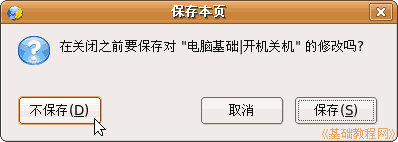

电脑操作基础
作者：TeliuTe 来源：基础教程网
电脑是一个精密电器设备，操作中应瞄准和细心，学习电脑不仅能够掌握知识，还能综合音乐、美术，提高自己的能力；
开机是指给电脑接通电源，一般电脑由两部分组成：显示器和主机，
显示器的电源开关一般在屏幕右下角，旁边还有一个指示灯， 轻轻的按到底，再轻轻的松开，这时指示灯变亮，闪一下成为桔黄色表示显示器电源已经接通；
主机的开关一般在机箱正面，一个最大的圆形按钮，也有的在上面，旁边也有指示灯，
轻轻的按到底，再轻轻的松开，指示灯变亮，可以听到机箱里发出声音，这时显示器的指示灯会由黄变亮，主机电源已经接通；
很多的电 脑都配有稳压电源或者UPS不间断电源，这时就要先开启这些设备，等到他们的指示灯变亮稳定后再开启电脑的电源；
电脑的电源接通后接着就是耐心等待，这时会看到主机上的红灯不停的闪烁，这是里面的硬盘正在紧张工作，
等到音箱里传出音乐声，桌面上的鼠标指针不再闪动，屏幕右上角的所有东西都出来了，这时电脑就启动成功了；
启动成功的电脑处于等待状态，过一段时间屏幕就自动出现一个变换的画面，这是屏幕保护程序在运行，防止显示器某个地方长时间太亮烧坏；
再长时间显示器就会变黑，指示灯变桔黄色，这是系统的电源管理自动进入省电模式，这时主机的指示灯仍然亮着，移动一 下鼠标，或者按一下方向键就会恢复正常；
关机是指电脑的系统关闭和切断电源，先关闭所有打开的窗口。
有时会出现一个对话框，提示是否保存文件：

这时候不要的文件就点“否”关闭，有用的文件就点“是”，然后保存一下，关完所有窗口，屏幕下面的任务栏上是一个空白的
这时就可以单击右上角的红色按钮， 选择“关机”就可以了，
然后出来一些提示，主机里面响一声，主机上的电源指示灯熄灭，显示器上的指示灯变成桔黄色，
再按一下显示器的开关，关闭显示器，指示灯熄灭，这时电脑就安全的关闭了，
如果有稳压电源 、UPS等再关闭它们；
注意开机、关机之间要隔上一段时间，一般心里默数到20以后再开 ；
注意讲究卫生，保护眼睛，保持干净整洁，凳子摆放整齐；
练习：
1）指出电脑上显示器和主机的电源开关和指示灯；
2）练习一遍开机和关机，注意关机后等上一段时间再开机；
本节学习了计算机的开机和关机，如果你成功的完成了练习，请继续学习下一课内容。
本教程由86团学校TeliuTe制作|著作权所有，不得用于商业用途
基础教程网：http://teliute.org
美丽的校园……
转载和引用本站内容，请保留版权信息和本站链接。